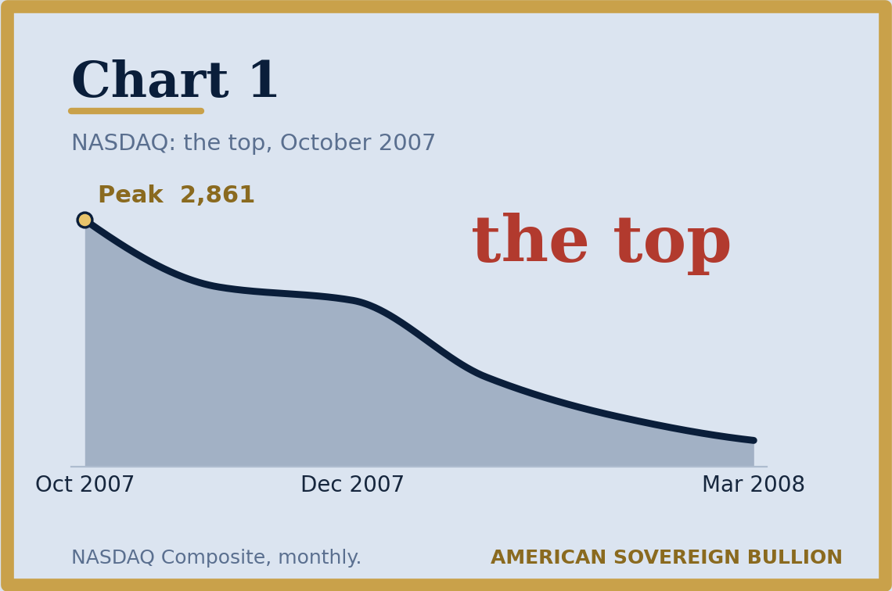
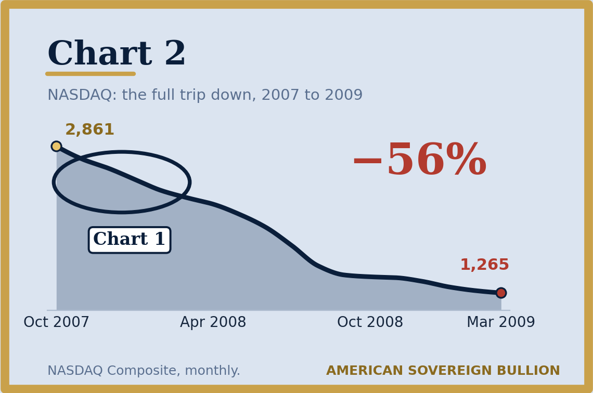
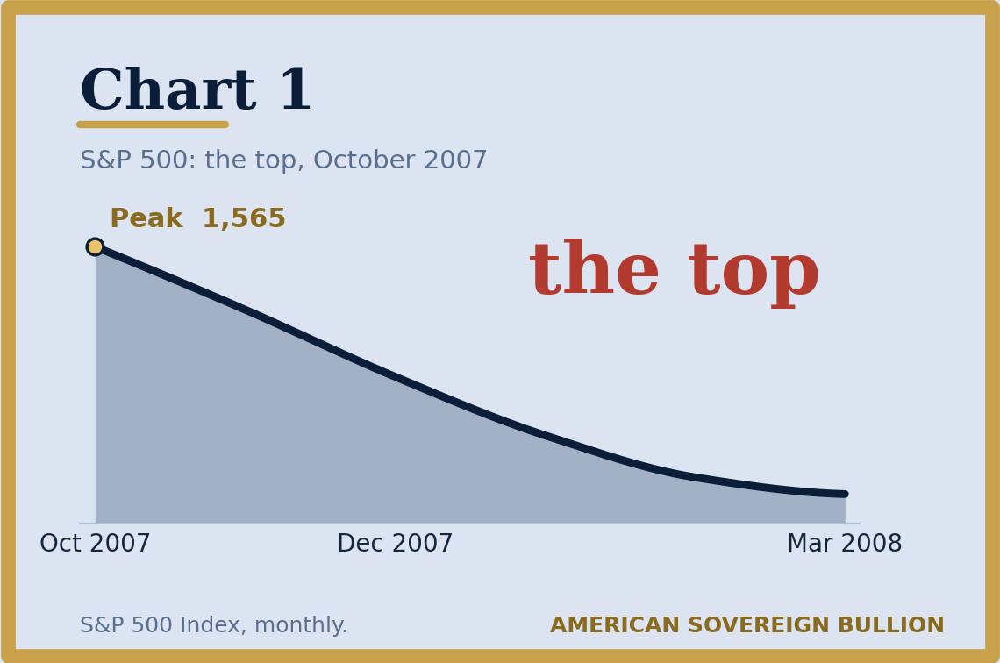
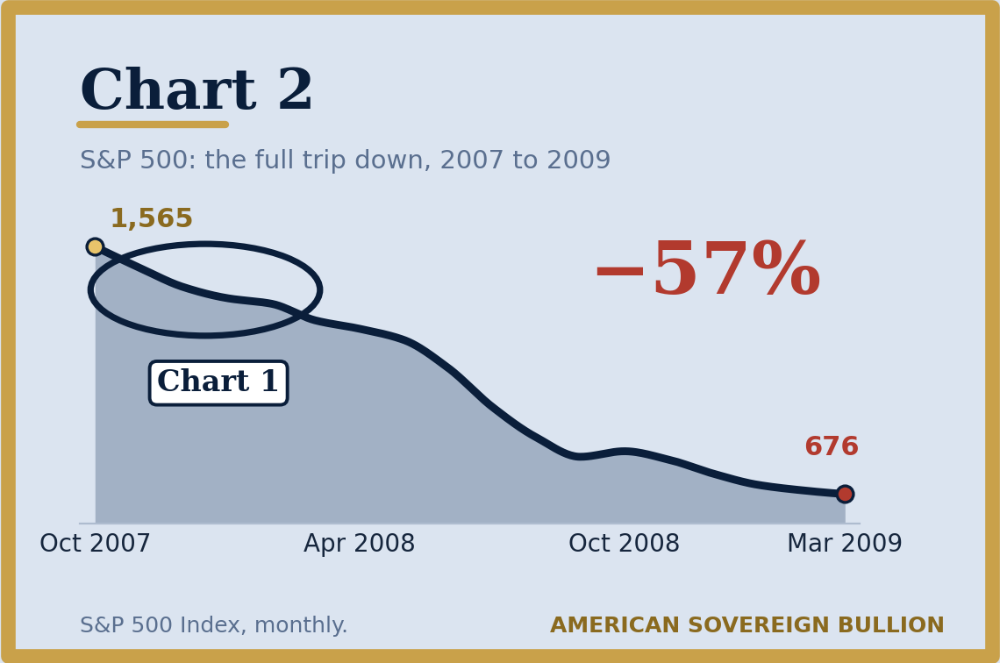
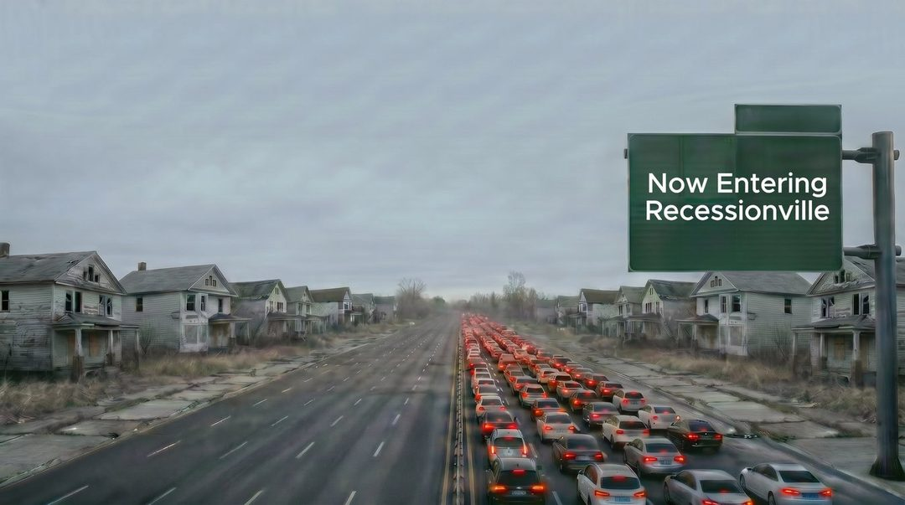
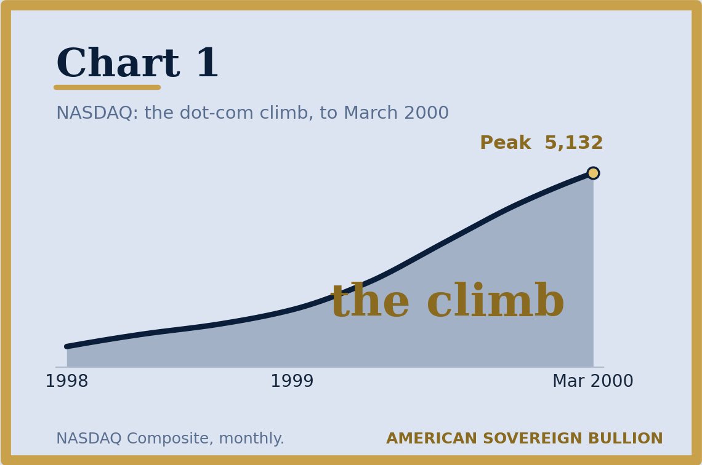
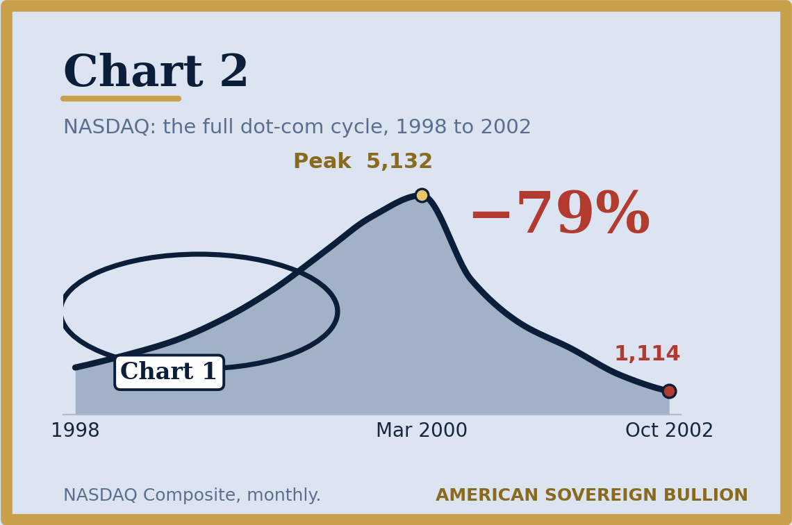

Very short and to-the-point message today.
Published June 2026. Figures are as of that date.
First off, the fundamentals once considered required to support believable, sturdy growth are not what is driving the numbers on the screen today. A large share of the rise has come alongside an enormous expansion of the federal debt, most of it after 2008.
The federal debt is now larger than the entire annual output of the U.S. economy. You see the joke right?
Question:Could the chart below numbered 1-

-indicate what was to follow in chart number 2?

Both charts show the NASDAQ, chart 1 is just the beginning of the meltdown October 2007 as things peaked to March 2008 as the sell-off was initiating.
“You see the stock market is the last to know about the recession.”
The second chart captures the full multi-year revisit to reality, the NASDAQ took back 50% of its temporary gains.
Dalio told Bloomberg Television that U.S. stocks are nearing bubble territory last seen before two of history’s worst crashes, while a separate, debt-driven crisis has already crossed a line there is no coming back from.
“…past the point of no return.”Ray Dalio, via Bloomberg / Fortune
The last time the S&P 500 looked this expensive, it did not end well. It lost 57% from its October 2007 top before it found a bottom in March 2009.
Does the chart below-

-tell you that you were about to experience a 50% stock market reversal?

Chart #1 was a snapshot of ups and downs and nothing there indicated bust because the chart by itself is a mirror of what’s happening, not a crystal ball.
The Indicators in this and previous posts to you are not the crystal ball either, there isn’t a crystal ball- THERE IS A MAP.
When you want to get anywhere new, you’ll use one. A map. Financial Louis and Clarks surveyed the financial landscape and the milestone markers they made note of, are what financial Winners are pointing to now for you to see as the markers that one passes headed into Recessionville.
Leaving Bullmarketland for Recessionville.

In a note dated June 5, BofA strategists led by Savita Subramanian urged caution: a growing number of bear-market signposts point to an approaching top. About 70% of those signals have triggered, in line with the average seen at past market peaks. They flagged the S&P 500 as statistically expensive on 17 of 20 metrics, and on eight of them, pricier than at the dot-com-bubble top.
“Too many red flags. Take profits.”Savita Subramanian, Bank of America
And there’s more. BofA’s Bull & Bear Indicator flashed a hyper-bull reading for the first time in 8 years (David Dierking, Jan 28, 2026). Historically, that signal points to a sharp correction ahead.
A separate read (Jeremy Phillips, June 5): the SPDR S&P 500 ETF (SPY) closed at $757.09 on June 4, up 27% in a year, and the Nasdaq’s QQQ is up 40%. The tape looks clean. Two long running sentiment measures are at readings they last reached before earlier market declines.
VALUE AT PEAK AND BOTTOM
| Index | 2000 | Date | Result | 2008 | Date | Result | 2026 | Up from 2009 low | |
|---|---|---|---|---|---|---|---|---|---|
| Peak | S&P 500 | 1,552 | Mar 2000 | −50% | 1,565 | Oct 2007 | −57% | 7,241 | 1071% |
| Bottom | 776 | Oct 2002 | 676 | Mar 2009 | |||||
| Peak | NASDAQ | 5,132 | Mar 2000 | −79% | 2,861 | Oct 2007 | −56% | 25,022 | 1978% |
| Bottom | 1,114 | Oct 2002 | 1,265 | Mar 2009 | |||||
| Peak | Dow Jones | 11,722 | Jan 2000 | −39% | 14,164 | Oct 2007 | −54% | 50,287 | 762% |
| Bottom | 7,197 | Oct 2002 | 6,594 | Mar 2009 | |||||
| Artificial debt in system | $5.6 Trillion | $11.9 Trillion | $39.2 Trillion | ||||||
S&P 500
NASDAQ
Dow Jones
Figures as supplied. “Up from the 2009 low” compares each index today with its March 2009 bottom.
2025 felt like a roller coaster: the S&P 500 and Nasdaq tumbled more than once, then bounced back to new highs each time. Kiyosaki thinks the worst is still ahead. Crashes, he says, don’t happen overnight; they take decades to build. In 2002 he released Rich Dad’s Prophecy; he says its predictions are coming true in 2026.
“I WARNED EVERYONE.”Robert Kiyosaki, April 17
He predicts the “everything bubble” will burst into the greatest depression in world history.
The same instincts that called 2008 have Burry warning again, pointing to AI over-speculation and “catastrophically overbuilt” AI infrastructure. He has taken a significant leveraged short. To his 200,000-plus Substack readers he flags military action in Iran, surging oil, and AI’s strain on private lending as catalysts. On May 11 he compared the record-breaking S&P rally to the air just before the dot-com crash.
“The market has jumped the shark.”Michael Burry
The gains in the NASDAQ-100 have been concentrated in its ten largest stocks. We have not been able to verify against a published source the specific one year figures that were circulating for that group, so they are not reproduced here.
Did this chart covering the peak of dot-com in 2000 foreshadow

…this?

While investors pour into AI, two of the sharpest minds on the planet are sitting it out, waiting for the fall: Warren Buffett, who stepped back from running Berkshire Hathaway at the end of 2025 and left a record cash pile behind him, and Michael Burry, who called 2008. Neither is impressed by this market.
Buffett has said in remarks to CNBC that he has rarely seen the public in a more speculative mood. We have not established the broadcast date, so the remark is paraphrased here rather than quoted.
Neither has been buying into this market at these levels.
On a Bloomberg podcast (reported March 11, 2026, by Emma Caplan-Fisher), the man who steered Goldman through the last crisis warned that the $1.8 trillion private-credit market echoes the run-up to 2008. These risky, hard-to-sell loans are now being pushed into ordinary 401(k)s, which means your retirement account could already be in the crossfire.
“…due for a kind of a reckoning.”Lloyd Blankfein
If you let the Louis & Clark reference settle into your mind- this gets simpler. There is a map that illustrates the cycle. These indicators are on the map telling you where you are in the cycle.
We were not at this place on the map last year, as the financial journey advances…we are now past the milestones that are there, affixed on the cyclical journey of highs and lows, that one passes as you enter RECESSIONVILLE.
We are pointing to the markers on the map. What you do with them is your call.
How you’ll experience things financial, will be dictated by “where your money was located, while that experience is occurring.”
Where your savings sit is a decision only you can make. Gold and silver rise and fall in value like anything else, and past patterns do not guarantee future results.
Gold and silver sit outside the stock market. They have not always moved with it, and they have not always moved against it either.
Figures are as published on the dates shown. Market levels move; nothing on this page is updated after the publication date above.
Physical gold and silver, delivered to your door or held in your name. Speak with a dedicated specialist at no obligation.
Request Your Free Gold & Silver Guide